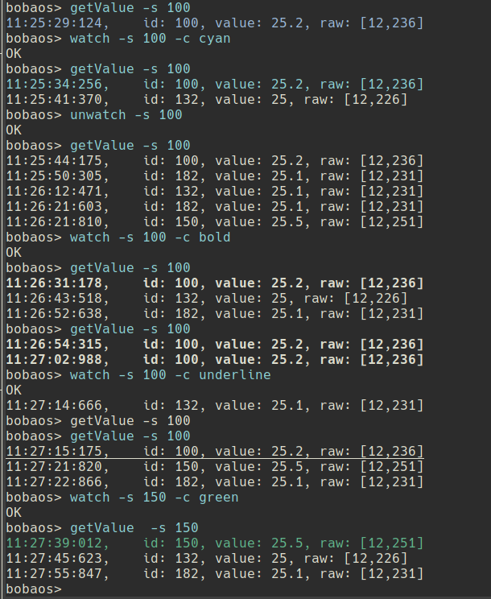

Commandline interface [bdsd-cli]¶
Commad-line interface for Bobaos Datapoint Sdk.
Installation¶
First, you need to install and run as a service bdsd.sock
If it is already done, proceed to next steps:
$ sudo npm install -g bdsd-cli
Usage¶
- Start the application
$ bdsd-cli
connected
bobaos>
bdsd-cli accepts -s, --sockfile parameter with path to bdsd.sock. Default is $XDG_RUNTIME_DIR/bdsd.sock.
- Get command list
bobaos> help
Commands:
help [command...] Provides help for a given command.
exit Exits application.
getDatapoints Get all datapoint descriptions
getDescription [options] Get datapoint description
getValue [options] Get datapoint value
readValue [options] Send read request to bus
setValue [options] Set datapoint value
setProgrammingMode [options] Set programming mode
getStoredValue [options] Get stored datapoint value from bdsd.sock
readValues [options] Send read request to bus for multiple values
setValues [options] Send read request to bus for multiple numerical/bool values
watch [options] Highlight datapoint in log
unwatch [options] Remove datapoint value hightlight
- Try commands:
bobaos> setProgrammingMode -v 1
Set programming mode: success
bobaos> setProgrammingMode -v 0
Set programming mode: 1
bobaos> getDatapoints
[ { id: 1,
length: 2,
flags:
{ priority: 'low',
communication: true,
read: true,
write: true,
readOnInit: false,
transmit: true,
update: false },
dpt: 'dpt9' },
{ id: 2,
length: 1,
flags:
{ priority: 'low',
communication: true,
read: false,
write: true,
readOnInit: false,
transmit: true,
update: false },
dpt: 'dpt5' } ]
bobaos> getValue -s 1
14:01:35:504, id: 1, value: 22, raw: [12,76]
bobaos> setValue -s 2 -v 0
bobaos> readValue -s 1
bobaos> readValue -s 2
14:01:56:106, id: 2, value: 0, raw: [0]
bobaos> getDescription -s 1
{ id: 1,
value:
{ id: 1,
dpt: 'dpt9',
flags:
{ priority: 'low',
communication: true,
read: true,
write: true,
readOnInit: false,
transmit: true,
update: false },
length: 2 } }
bobaos> getStoredValue -s 1
14:02:25:748, id: 1, value: 21.9, raw: [12,71]
bobaos> readValues -s "1, 2, 3"
14:02:44:399, id: 1, value: 21.9, raw: [12,71]
14:02:44:483, id: 2, value: 0, raw: [0]
14:02:44:607, id: 3, value: 0, raw: [0]
bobaos> setValues -s "3:0, 4:0, 5:1"
bobaos>
Added in 2.0.10:
- Datapoint value hightlight:

- DBAD license